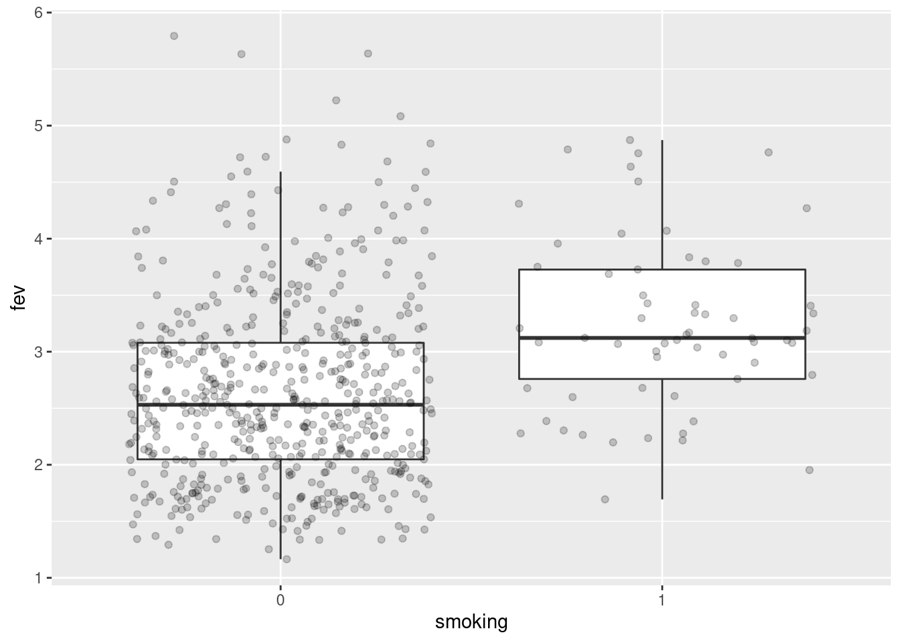
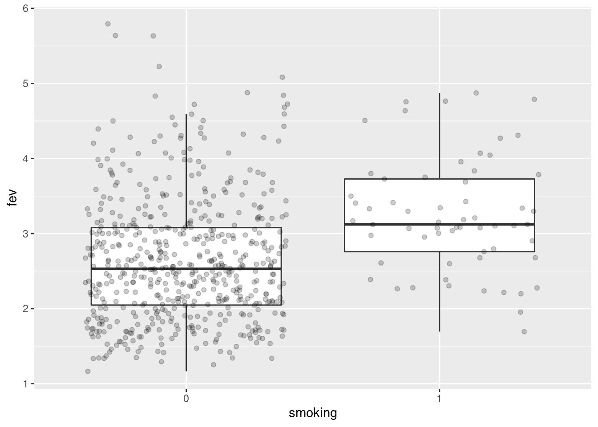
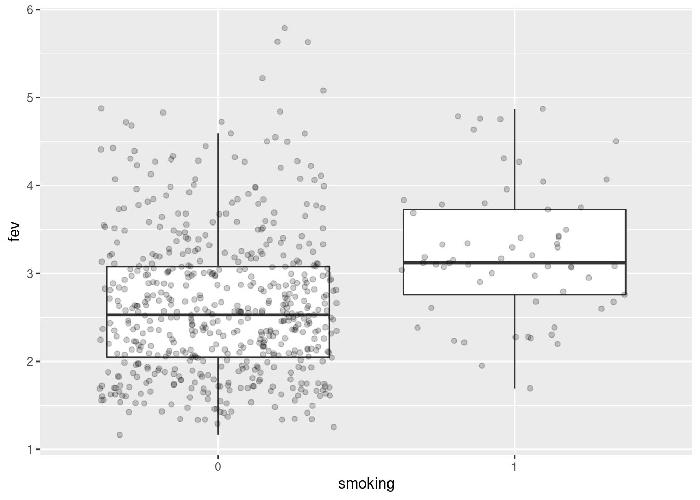
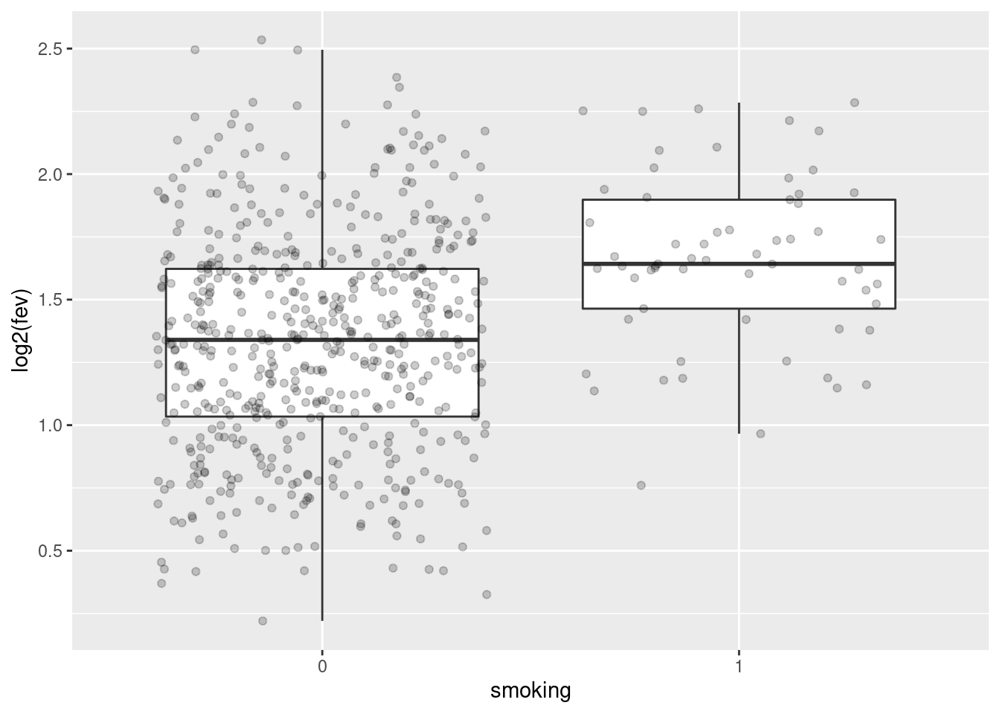
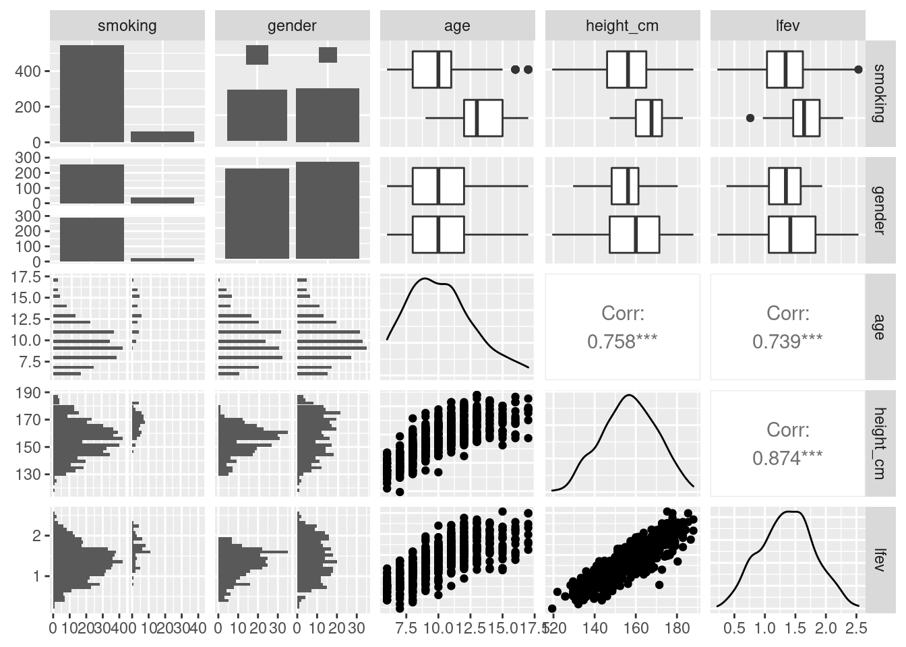
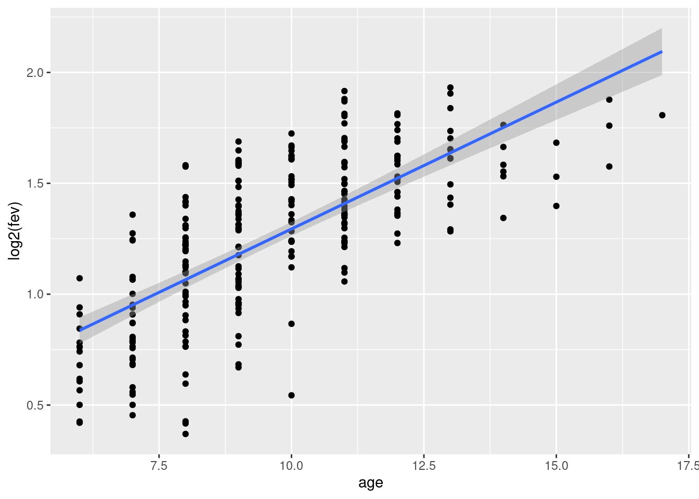
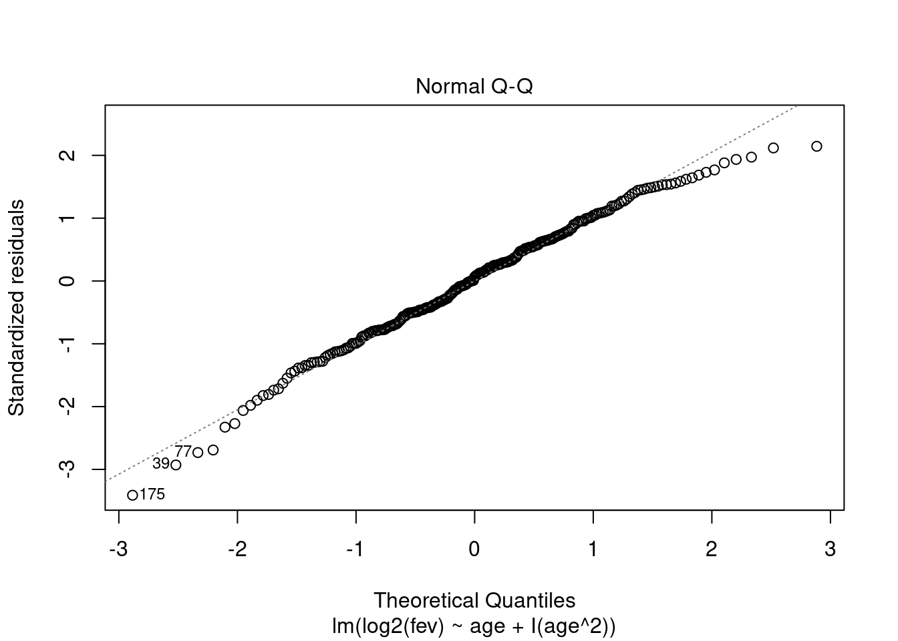

1 Longvolume en rokerstatus
- Onderzoekers willen de impact van roken onderzoeken op longcapaciteit bij schoolgaande kinderen en adolescenten.
- Ze meten hierbij de longcapaciteit (in l) bij rokende en niet-rokende leerlingen (forced expiratory volume).

1.1 Importeer data
library(tidyverse)## ── Attaching packages ─────────────────────────────────────── tidyverse 1.3.1 ──## ✔ ggplot2 3.3.5 ✔ purrr 0.3.4
## ✔ tibble 3.1.4 ✔ dplyr 1.0.7
## ✔ tidyr 1.1.3 ✔ stringr 1.4.0
## ✔ readr 1.4.0 ✔ forcats 0.5.1## ── Conflicts ────────────────────────────────────────── tidyverse_conflicts() ──
## ✖ dplyr::filter() masks stats::filter()
## ✖ dplyr::lag() masks stats::lag()fev <- read_tsv("https://raw.githubusercontent.com/GTPB/PSLS20/master/data/fev.txt")##
## ── Column specification ────────────────────────────────────────────────────────
## cols(
## age = col_double(),
## fev = col_double(),
## height = col_double(),
## gender = col_character(),
## smoking = col_double()
## )head(fev)1.2 Data manipulatie
genderandsmokingkunnen beter worden omgezet naar factor variabelen- De
heightvariabele is in inches dus deze zetten we om in cm.
fev <- fev %>%
mutate(gender = as.factor(gender)) %>%
mutate(smoking = as.factor(smoking)) %>%
mutate(height_cm = height*2.54)
head(fev)1.3 Enkele Concepten
In een experimentele studie gaat een onderzoeker de behandeling at random toewijzen aan de experimentele eenheden en observeert hij/zij het effect van de behandeling bij de experimentele eenheden door het meten van één of meerdere reponse variabelen.
Een experimentele eenheid (experimental unit) is de eenheid (subject, plant, pot, proefdier) dat at random aan de behandeling wordt toegewezen. Experimentele eenheden in fev example?
Een response variabele is a karakteristiek van de experimentele eenheid die wordt gemeten en geanalyseerd om het effect van de behandeling na te gaan. Response variable in fev example?
Een observationele eenheid is de eenheid waarop de response variabele wordt gemeten. Veelal is er een één-op-één overeenkomst tussen experimentele en observationele eenheden. Maar dat is niet altijd zo: b.v. pseudoreplicatie zoals wanneer men technische herhalingen heeft voor elke gemeten karakteristiek bij een subject. Observationele eenheid in fev voorbeeld?
Een factor is een verklarende variabele die twee of meer niveaus aan kan nemen. Voorbeelden in de fev studie?

- Populatie?
1.4 Data Exploratie
1.4.1 Summary statistics
fevSum <- fev %>%
group_by(smoking) %>%
summarize_at("fev",
list(mean = mean,
sd = sd,
n = length)
) %>%
mutate(se = sd/sqrt(n))
fevSum- Let op dat deze code niet werkt als er ontbrekende data zijn.
- In dat geval gebruik je onderstaande code
fevSum <- fev %>%
group_by(smoking) %>%
summarize_at("fev",list(mean=~mean(.,na.rm=TRUE),
sd=~sd(.,na.rm=TRUE),
n=function(x) x%>%is.na%>%`!`%>%sum)) %>%
mutate(se=sd/sqrt(n))
fevSum1.5 Visualisatie
fev %>%
ggplot(aes(x = smoking, y = fev)) +
geom_boxplot(outlier.shape = NA) +
geom_jitter(alpha = .2)
- Effect grootte?
We kunnen de plots ook als objecten opslaan voor later gebruik!
p1 <- fev %>%
ggplot(aes(x=smoking,y=fev)) +
geom_boxplot(outlier.shape=NA) +
geom_jitter(alpha=.2)
p2 <- fev %>%
ggplot(aes(sample=fev)) +
geom_qq() +
geom_qq_line() +
facet_wrap(~smoking)
p1
p21.6 Onderzoeksvraag
De onderzoekers wensen het effect te kennen van roken op de long capaciteit van jongeren.
1.7 Hoe modelleren we de data?
- \(x_i\): dummy variabele voor rokerstatus voor subject \(i\): \(x_{i,1}=\begin{cases} 0& \text{niet-roker}\\ 1& \text{roker} \end{cases}\).
\[Y_i\vert x_i\sim N(\mu_i,\sigma^2)\]
via lineair model?
\[Y_i = \beta_0 + \beta_1 x_i + \epsilon_i \text{ met } \epsilon_i\sim N(0,\sigma^2)\]
Vertaal de onderzoeksvraag naar de model parameters?
library(ExploreModelMatrix)
lm1 <- lm(fev~smoking, fev)
lm1 ##
## Call:
## lm(formula = fev ~ smoking, data = fev)
##
## Coefficients:
## (Intercept) smoking1
## 2.6346 0.6054explMx <- VisualizeDesign(fev,designFormula = ~smoking)
explMx$plotlist## [[1]]Vertaal de onderzoeksvraag naar een parameter in het model.
Effectgrootte:
\[\mu_1-\mu_0 = \beta_0+\beta_1 - \beta_0 = \beta_1\]
1.7.1 Schatten van de effectgrootte en de standard error
summary(lm1)##
## Call:
## lm(formula = fev ~ smoking, data = fev)
##
## Residuals:
## Min 1Q Median 3Q Max
## -1.5460 -0.5754 -0.1036 0.4474 3.1584
##
## Coefficients:
## Estimate Std. Error t value Pr(>|t|)
## (Intercept) 2.63463 0.03469 75.943 < 2e-16 ***
## smoking1 0.60541 0.10935 5.537 4.6e-08 ***
## ---
## Signif. codes: 0 '***' 0.001 '**' 0.01 '*' 0.05 '.' 0.1 ' ' 1
##
## Residual standard error: 0.8099 on 604 degrees of freedom
## Multiple R-squared: 0.0483, Adjusted R-squared: 0.04672
## F-statistic: 30.65 on 1 and 604 DF, p-value: 4.603e-081.8 Statistische Inferentie?
1.8.1 Nul en alternatieve hypothese?
We wensen de alternatieve hypothese \(H_1\) aan te tonen: er is een effect van roken op de longcapaciteit van jongeren. We vertalen dit naar ons model:
- \(H_1\): Gemiddeld is de longcapaciteit van niet-rokende en rokende jongeren verschillend \[\beta \neq 0\]
We kunnen op basis van data echter een hypothese niet bewijzen. Daarom zullen we het omgekeerde falsifiëren:
\(H_0\): Gemiddeld is de longcapaciteit van niet-rokende en rokende jongeren gelijk \[\beta = 0\]
Hoe falsifieren we \(H_0\)?
summary(lm1)##
## Call:
## lm(formula = fev ~ smoking, data = fev)
##
## Residuals:
## Min 1Q Median 3Q Max
## -1.5460 -0.5754 -0.1036 0.4474 3.1584
##
## Coefficients:
## Estimate Std. Error t value Pr(>|t|)
## (Intercept) 2.63463 0.03469 75.943 < 2e-16 ***
## smoking1 0.60541 0.10935 5.537 4.6e-08 ***
## ---
## Signif. codes: 0 '***' 0.001 '**' 0.01 '*' 0.05 '.' 0.1 ' ' 1
##
## Residual standard error: 0.8099 on 604 degrees of freedom
## Multiple R-squared: 0.0483, Adjusted R-squared: 0.04672
## F-statistic: 30.65 on 1 and 604 DF, p-value: 4.603e-08Hoe waarschijnlijk is het om een effectgrootte (test-statistiek) te vinden die meer extreem is dan wat we observeerden in een random steekproef wanneer de nulhypothese waar is.
Als we aannames kunnen doen over de verdelingen van de gegevens, kennen we de verdeling van de test statistiek en kunnen we die kans berekenen: p-waarde.
Als de p-waarde lager is dan het nominale significantie-niveau \(\alpha\) verwerpen we de null hypothese.
We controleren de kans op het maken van een vals positieve conclusie op het \(\alpha\)-niveau (type I fout)
- De p-value is enkel correct als de onderliggende aannames geldig zijn.
p1
p2
- Biologische metingen zijn dikwijls niet normaal verdeeld.
- Dikwijls zijn de gegevens na log-transformatie meer normaal
verdeeld.
- Verschillen op log schaal:
\[ \log_2(S) - \log_2(NS) = \log_2 \frac{S}{NS} = \log_2 FC_{\frac{S}{NS}} \]
1.9 Log transformation
p1 <- fev %>%
ggplot(aes(x=smoking,y=log2(fev))) +
geom_boxplot(outlier.shape=NA) +
geom_jitter(alpha=.2)
p2 <- fev %>%
ggplot(aes(sample=log2(fev))) +
geom_qq() +
geom_qq_line() +
facet_wrap(~smoking)
p1
p2lm1 <- lm(log2(fev)~smoking,fev)
summary(lm1)##
## Call:
## lm(formula = log2(fev) ~ smoking, data = fev)
##
## Residuals:
## Min 1Q Median 3Q Max
## -1.11108 -0.28248 0.00693 0.28172 1.20290
##
## Coefficients:
## Estimate Std. Error t value Pr(>|t|)
## (Intercept) 1.33141 0.01833 72.649 < 2e-16 ***
## smoking1 0.32592 0.05776 5.642 2.58e-08 ***
## ---
## Signif. codes: 0 '***' 0.001 '**' 0.01 '*' 0.05 '.' 0.1 ' ' 1
##
## Residual standard error: 0.4278 on 604 degrees of freedom
## Multiple R-squared: 0.05007, Adjusted R-squared: 0.0485
## F-statistic: 31.84 on 1 and 604 DF, p-value: 2.582e-082^(lm1$coefficients)## (Intercept) smoking1
## 2.516487 1.2534632^(confint(lm1))## 2.5 % 97.5 %
## (Intercept) 2.454484 2.580058
## smoking1 1.158676 1.356004## verschil in variantie --> Welch t-test
fevttest <- t.test(log2(fev)~smoking,fev)
2^(fevttest$estimate[2]-fevttest$estimate[1])## mean in group 1
## 1.2534632^-fevttest$conf.int %>% sort## [1] 1.174285 1.3379791.10 Conclusie
Er is een extreem significant verschil in gemiddelde longinhoud tussen rokende en niet-rokende jongeren (\(p << 0.001\)).
Gemiddelde is de longinhoud 1.25 keer groter bij rokerende dan bij niet-rokende jongeren (95% BI [1.17, 1.34] .
- Probleem!
- Observationele studie
- Confounding!
- Leeftijd (L) is heeft een invloed op het rookgedrag (R) en op de longinhoud (V)!
- Als we leeftijd niet meenemen in de analyse dan kan het zijn dat de associatie tussen rookgedrag en de longinhoud vertekend is omdat rokers en niet-rokers niet alleen in rookgedrag maar ook in leeftijd verschillen!
- Confounding is een probleem die typisch optreedt in observationele studies!
library(GGally)## Registered S3 method overwritten by 'GGally':
## method from
## +.gg ggplot2fev %>%
mutate(lfev=log2(fev)) %>%
dplyr::select(smoking,gender,age,height_cm,lfev) %>%
ggpairs()## `stat_bin()` using `bins = 30`. Pick better value with `binwidth`.## `stat_bin()` using `bins = 30`. Pick better value with `binwidth`.
## `stat_bin()` using `bins = 30`. Pick better value with `binwidth`.
## `stat_bin()` using `bins = 30`. Pick better value with `binwidth`.
## `stat_bin()` using `bins = 30`. Pick better value with `binwidth`.
## `stat_bin()` using `bins = 30`. Pick better value with `binwidth`.
Een betere data exploratie:
fev %>%
ggplot(aes(x=as.factor(age),y=fev,fill=smoking)) +
geom_boxplot(outlier.shape=NA) +
geom_point(size = 0.1, position = position_jitterdodge()) +
theme_bw() +
scale_fill_manual(values=c("dimgrey","firebrick")) +
ggtitle("Boxplot of FEV versus smoking, stratified on age and gender") +
ylab("fev (l)") +
xlab("age (years)") +
facet_grid(rows = vars(gender))- Hoe zouden we de associatie tussen leeftijd en fev kunnen modelleren?
- We doen dit eerst enkel voor niet-rokende meisjes. Want er is ook een associatie tussen fev en geslacht.
lm2 <- fev %>%
filter(gender=="f" & smoking == 0) %>%
lm(log2(fev)~age,.)
summary(lm2)##
## Call:
## lm(formula = log2(fev) ~ age, data = .)
##
## Residuals:
## Min 1Q Median 3Q Max
## -0.75023 -0.16864 0.00122 0.18291 0.51611
##
## Coefficients:
## Estimate Std. Error t value Pr(>|t|)
## (Intercept) 0.150534 0.069503 2.166 0.0313 *
## age 0.114369 0.007011 16.313 <2e-16 ***
## ---
## Signif. codes: 0 '***' 0.001 '**' 0.01 '*' 0.05 '.' 0.1 ' ' 1
##
## Residual standard error: 0.252 on 253 degrees of freedom
## Multiple R-squared: 0.5126, Adjusted R-squared: 0.5107
## F-statistic: 266.1 on 1 and 253 DF, p-value: < 2.2e-16plot(lm2)fev %>%
filter(gender=="f" & smoking == 0) %>%
ggplot(aes(x=age,y=log2(fev))) +
geom_point() +
geom_smooth(method = "lm", formula = y ~ x )
- Residu plot heeft probleem aan!
lm3 <- fev %>%
filter(gender=="f" & smoking == 0) %>%
lm(log2(fev)~age + I(age ^2),.)
summary(lm3)##
## Call:
## lm(formula = log2(fev) ~ age + I(age^2), data = .)
##
## Residuals:
## Min 1Q Median 3Q Max
## -0.8147 -0.1650 0.0153 0.1645 0.5122
##
## Coefficients:
## Estimate Std. Error t value Pr(>|t|)
## (Intercept) -1.04905 0.23698 -4.427 1.43e-05 ***
## age 0.36096 0.04725 7.639 4.57e-13 ***
## I(age^2) -0.01202 0.00228 -5.271 2.91e-07 ***
## ---
## Signif. codes: 0 '***' 0.001 '**' 0.01 '*' 0.05 '.' 0.1 ' ' 1
##
## Residual standard error: 0.2396 on 252 degrees of freedom
## Multiple R-squared: 0.561, Adjusted R-squared: 0.5576
## F-statistic: 161 on 2 and 252 DF, p-value: < 2.2e-16plot(lm3)
fev %>%
ggplot(aes(x=age,y=log2(fev))) +
geom_point() +
geom_smooth(method = "lm", formula = y ~ x + I(x^2)) +
facet_wrap(gender ~ smoking)2 Algemeen Linear Model
Hoe kunnen we meerdere factoren en continue predictoren combineren in een lineair model?
\[ y_i= \beta_0 + \beta_S x_{i,S} + \beta_A x_{i,A} +\epsilon_i, \]
emt
- \(x_{i,S}\) een dummy variabele voor rokerstatus: \(x_{i,1}=\begin{cases} 0& \text{niet-roker}\\ 1& \text{roker} \end{cases}\)
- \(x_{i,A}\) is de leeftijd.
2.1 Implementatie in R
- We doen dit nu enkel voor de meisjes omdat er ook effecten van geslacht zijn. Later leren we hoe we daarmee om kunnen gaan.
lmS_age <- fev %>%
filter(gender=="f") %>%
lm(log2(fev)~smoking + age,data=.)
summary(lmS_age)##
## Call:
## lm(formula = log2(fev) ~ smoking + age, data = .)
##
## Residuals:
## Min 1Q Median 3Q Max
## -0.74590 -0.16639 0.01665 0.19547 0.52963
##
## Coefficients:
## Estimate Std. Error t value Pr(>|t|)
## (Intercept) 0.271785 0.069410 3.916 0.000113 ***
## smoking1 -0.048477 0.051598 -0.940 0.348257
## age 0.101810 0.006984 14.577 < 2e-16 ***
## ---
## Signif. codes: 0 '***' 0.001 '**' 0.01 '*' 0.05 '.' 0.1 ' ' 1
##
## Residual standard error: 0.2626 on 289 degrees of freedom
## Multiple R-squared: 0.4648, Adjusted R-squared: 0.4611
## F-statistic: 125.5 on 2 and 289 DF, p-value: < 2.2e-16De parameter smoking1 krijgt nu de interpretatie van de gemiddelde log2 fold change in longinhoud tussen rokers en niet rokers na correctie voor de leeftijd:
- Roker: \[E[y|\text{roker}, X_A=x] = \beta_0 + \beta_s + \beta_A x\]
- Niet-roker: \[E[y|\text{niet-roker}, X_A=x] = \beta_0 + \beta_A x\]
- verschil tussen roker en niet-roker van dezelfde leeftijd (\(X_A=x\)): \[E[y|\text{roker}, X_A=x]- E[y|\text{niet-roker}, X_A=x]=\beta_0 + \beta_s + \beta_A x- \beta_0 + \beta_A x = \beta_s\]
We weten uit de data exploratie echter dat dit nog niet het correcte model is:
- Niet-lineair effect van leeftijd.
- Associatie tussen FEV en rokersstatus verandert i.f.v. leeftijd, waarschijnlijk door associatie met hoelang al wordt gerookt. We zullen later zien dat dit een interactie is.
- We wensen het model ook uit te breiden voor Gender.
- We zien dat het niet evident is om conclusie te trekken op basis van observationele studies omwille van mogelijkse confounding
- In de volgende lessen gaan we dieper in op het algemene lineair model waarin we meerdere factoren en continue variabelen kunnen combineren als predictoren voor het modelleren van het gemiddelde van de continue response variabele.